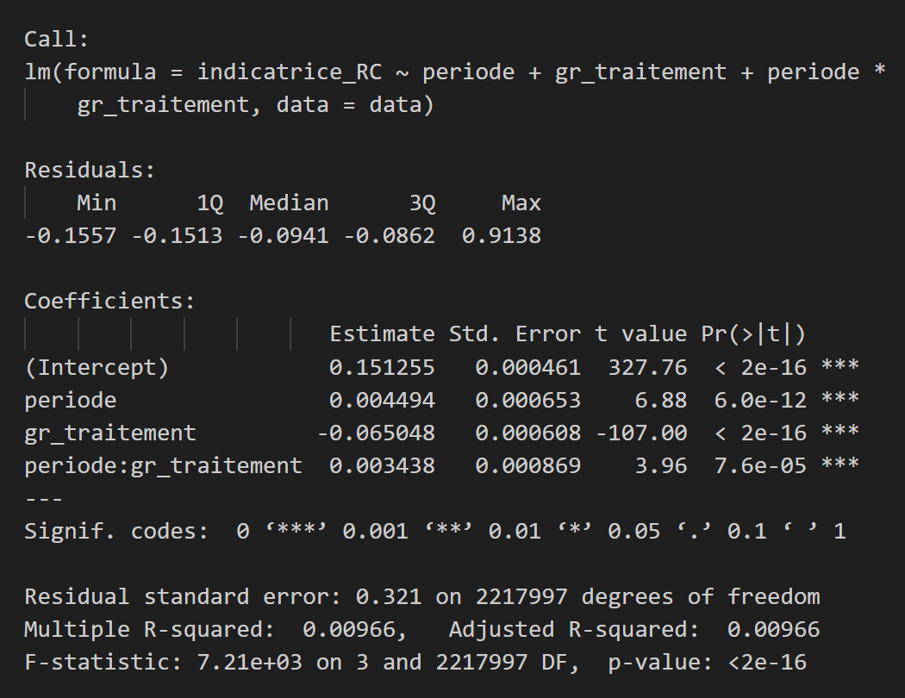

Objectif Objective
L’augmentation du coût des ruptures conventionnelles pour les salariés de moins de 62 ans a-t-elle entraîné une réduction du nombre de ruptures conventionnelles chez les salariés seniors ? [...]
Hypothèse Hypothesis
En théorie économique, une hausse du coût pour l’employeur devrait se traduire par une diminution de la quantité demandée, selon la sensibilité au prix, c’est-à-dire l’élasticité prix de la demande. Si l’élasticité prix est élevée, même une augmentation modérée du coût entraîne une baisse significative des ruptures conventionnelles. À l’inverse, si l’élasticité prix est faible, l’effet sur les quantités sera limité.
Le modèle : différence de différences The model : difference in differences
La méthode de doubles différences, qui consiste à comparer l’évolution le taux de ruptures conventionnelles dans le temps entre un groupe traité et un groupe de contrôle. [...]
p> Notre groupe traité est constitué des 58-62 ans, directement affectés par la réforme entrée en vigueur le 1er septembre 2023. Dans l’idéal, le groupe de contrôle serait composé des 58-62 ans non touchés par la réforme après cette date, mais un tel groupe n’existe pas. [...]Nous retenons donc les 53-57 ans comme groupe de contrôle, en supposant qu’ils présentent des caractéristiques proches des 58-62 ans en termes d’employabilité, de compétences et de situations professionnelles. Bien qu’eux aussi concernés par la réforme, ils ne sont pas directement affectés par la décision de réaliser une rupture conventionnelle juste avant de toucher les indemnités France Travail puis de partir à la retraite. Cette approche permet d’étudier spécifiquement l’impact de la réforme sur le recours aux ruptures conventionnelles pour les 58-62 ans à l’approche de la retraite. [...]

Dans un second temps, nous enrichissons la modélisation en intégrant des variables de contrôle, afin de tenir compte des différences structurelles entre les fins de contrats des 53-57 ans et des 58-62 ans (par exemple en termes de PCS ou secteur d’activité). Leur prise en compte permet ainsi de mieux isoler l’effet propre de la réforme, en neutralisant des facteurs confondants. [...]


Une fois ces covariables intégrées, le coefficient associé à l’interaction période × traitement n’est plus statistiquement significatif. Cela suggère que l’effet mis en évidence dans la modélisation simple s’expliquait en grande partie par des différences de composition. [...]
Interprétation des résultats Results
On ne trouve pas de résultat significatif à l’issue de la deuxième modélisation. Toutefois cela peut s’expliquer par la difficulté à isoler l’effet propre de la réforme avec nos modélisations. En effet, la réforme du coût des ruptures conventionnelles a eu lieu en même temps que le décalage de l’âge de départ à la retraite. [...]
Il est donc important de questionner aussi les interactions entre rupture conventionnelle et départ à la retraite. En effet, l’Unédic montre qu’il existe un effet horizon sur les ruptures conventionnelles, définit comme un pic d’ouvertures de droit environ 3 ans avant l’âge légal de départ à la retraite pour les ruptures conventionnelles individuelles, puisque les individus continuent de cotiser pour leur retraite pendant les périodes de chômage. [...]
L’existence de cet effet horizon implique que le recul de l’âge de la retraite peut avoir deux effets potentiels antagonistes sur le nombre de ruptures conventionnelles des seniors : [...]
- Un effet de décalage temporel, où le pic des ruptures se déplace vers des âges plus avancés ;
- Un effet d’incitation comportementale, où l’allongement de la durée d’activité exigée pourrait inciter certains salariés proches de la retraite à solliciter des ruptures conventionnelles malgré un coût plus élevé, soit parce qu’ils perçoivent une opportunité de sortir du marché du travail avant d’atteindre la retraite, soit parce que les employeurs préfèrent libérer ces salariés coûteux avant une période prolongée d’emploi. Ce comportement peut se renforcer si les employeurs considèrent que le coût plus élevé des ruptures est compensé par la réduction des coûts salariaux et des difficultés liées à l’emploi de travailleurs seniors.
L’effet d’incitation comportementale peut compenser l’effet de l’augmentation du cout de la rupture conventionnelle. Des recherches supplémentaires pourraient permettre de tester ces hypothèses en isolant les effets avec d’autres modélisations. [...]